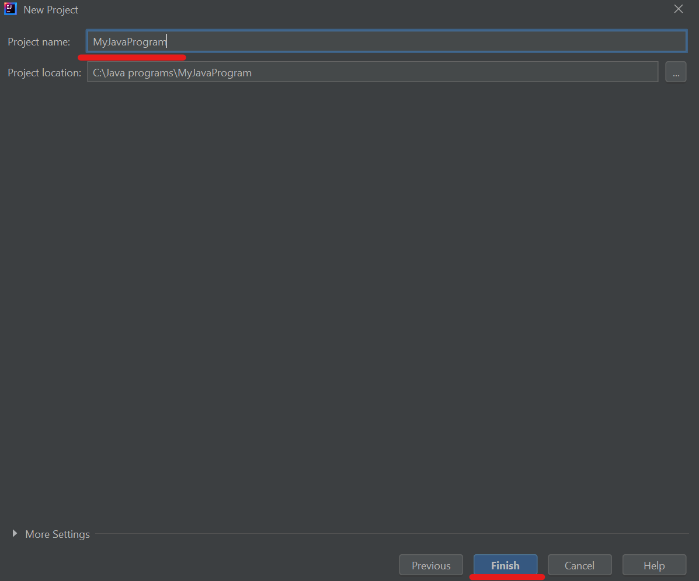

What is InteliJ IDEA and how to install it on your computer
InteliJ IDEA is a development environment created by the Czech company JetBraint in 2001. Based on the example of this development environment, many other development environments were created. One of them is Google's Android Studio development enviroment.
InteliJ IDEA ia a development enviroment primarily intended for the development of programs using the Java programming language, but also other languages that use the Java virtual machine for their execution (Groovy, Kotlin, Scala, ...).
The free, open-source version of InteliJ IDEA is called InteliJ IDEA Community and can be downloaded from the official website :
https://www.jetbrains.com/idea/downloadAt the specified address, you need to select the operating system you are using and then click on download.
After downloading, run the installation file and follow the installation instructions.
Select the path where you will place the development enviroment files.
By clicking on the Install button, the installation will be started.
Successful completion of the installation will display the following window. By clicking the Finish button, the installation will be finished and the development enviroment will be launched.
When starting the InteliJ IDEA development enviroment for the first time, it's necessary to set initial configurations. First, the theme selection window will be displayed.
In addition to the ability to choose a theme, InteliJ IDEA has several mor templates for configuring the development enviroment, with options to select different plugins that will be available for use within the development enviroment.
Creation of the first InteliJ IDEA project
Within the initial window, it is necessary to select the New Project option.
In order to create a project for the development of a new Java application, it is necessary to select Java programming language in the panel on the left. Creating a project for the development of Java programs also requires the existence of the JDK on the development computer.
If you don't have a JDK, check the post below on how to set it up :
Set up Java Development Kit (JDK)Clicking on the Next button takes you to the next page for creating a new project. It's page for choosing a templete for the project, if you create project without template, click the Next button without any additional actions.
The last window brings the options to name your project and choose the location for the placing project files. Enter the name of your project and then click on Finish.
If the folder on the specified path does not exist, the development enviroment will create it for us.
After creating a new project, it will be automatically opened, so you will get a screen like the one in the picture below.
Creating a Java class using the InteliJ IDEA development enviroment
A new Java class is created inside the src folder by selecting New -> Java Class.

By creating a new Java class, you get a window for entering the class name. Enter your class name and press Enter.
After creating a new class, a new file is created that has the same name as the class, with the extension .java